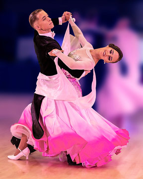
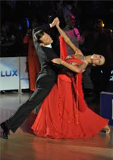
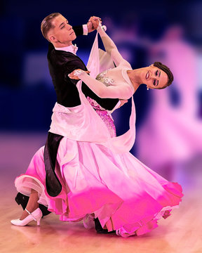
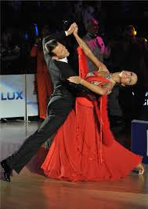

1. Эхлэл (1920–1950)
-
Бүжгийн спорт (DanceSport) нь анх Европт, ялангуяа Англи, Франц, Германд XX зууны эхээр хөгжиж эхэлсэн.

Бүжгийн спорт (DanceSport) нь анх Европт, ялангуяа Англи, Франц, Германд XX зууны эхээр хөгжиж эхэлсэн.
Тухайн үед “Ballroom Dance” буюу “бүжгийн танхимын бүжиг” гэж нэрлэдэг байв.

1920-иод онд Waltz, Tango, Foxtrot, Quickstep, Viennese Waltz
зэрэг бүжгүүд үүсэж, стандарт төрөлд орсон.
 



Харин Latin төрлийн бүжгүүд болох Cha-Cha-Cha, Samba, Rumba, Paso Doble, Jive нь
1930–1950 онд Латин Америк болон Карибын бүсээс үүссэн.